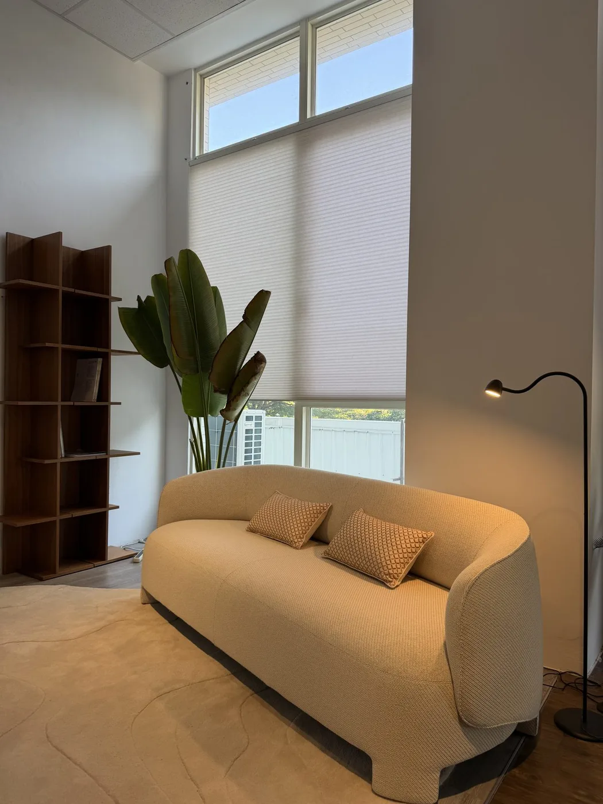
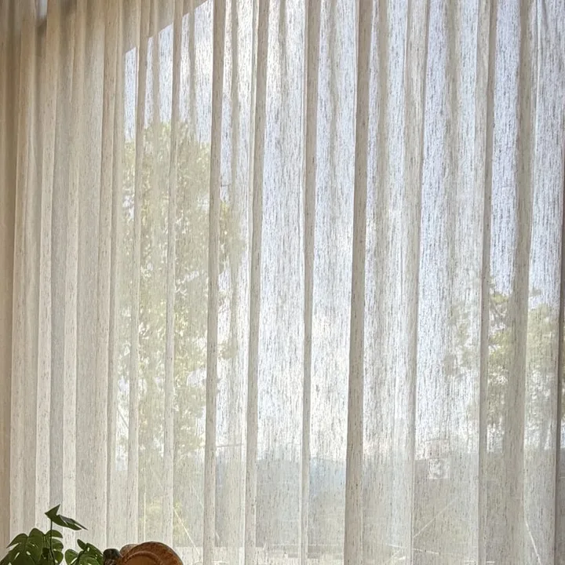

依您的空間需求與光線層次挑選，每一款皆可依尺寸與布料客製，歡迎直接於下方預約丈量與線上估價，我們將提供您一站式的規劃服務。

極簡俐落，操作簡便好清潔，遮光與透光款式皆備，兼顧美觀機能。

輕量鋁百葉耐潮防塵，可調角度精準控光，適合廚房、衛浴等潮濕空間。

天然木質或仿木質感，可調角度控制光線與隱私，耐用且富設計感。

層次分明，可自由調整光線通透度，兼顧採光與隱私，適合需要彈性控光的空間。

風琴簾又稱蜂巢簾，其結構能有效隔熱節能，線條簡約俐落，適合現代居家與辦公空間。

輕盈紗感搭配立體皺褶，光影朦朧夢幻，可自由調節光線通透度與角度，為空間增添柔美浪漫氛圍。

多樣布料花色，垂墜自然，適合客廳、臥室，營造最佳的空間光影氛圍。

柔光細紗透出朦朧光影，日夜氛圍皆宜，適合搭配其他窗簾做雙層層次。

大片布面平整垂掛，可左右滑動開合，線條俐落簡約，特別適合大面落地窗與空間隔間。

規律的波浪褶線條優雅大方，收合整齊不佔空間，搭配專用軌道，呈現俐落的飯店質感。

布簾與紗簾雙軌搭配，白天拉上紗簾透光又保有隱私，夜晚闔上布簾遮光好眠。
想看實際裝起來的樣子？從客廳、臥室、書房、衛浴、廚房到商業空間的安裝案例，都整理在空間作品集。
翻閱空間作品集我們安裝的不只是一片窗簾，
而是替一個家，留下剛剛好的光與隱私。
 寬 240 cm
高 190 cm
寬 240 cm
高 190 cm
量窗框內側的寬與高就好，不用很精準，免傳照片。估完可直接帶入預約丈量，官網預約現折 $2,000。
織光專注訂製窗簾與窗飾。每一次到府，我們先看光從哪裡進來、家人怎麼生活，再為這個家挑選合適的布料與款式。
簾幕輕啟，刺眼的光變得柔和，在牆上、在沙發邊慢慢暈開——這是我們想為您留下的日常。


每一步都有專人跟進，您只需要期待新的窗景。
深耕台中，服務全台。不用自己量尺寸、憑想像挑款式，我們親自到府，依窗型與採光給您合適的建議。
好看，也要適合您的家。從色澤、質感到遮光與隱私，陪您挑出耐看又住得舒服的那塊布。
從丈量、選布、報價到安裝，都有專人全程跟進。細節交給我們，您只需要期待新的窗景。
丈量與諮詢完全免費，全台服務範圍皆適用。
不限台中。織光窗簾目前採無門市、全台到府服務，台灣本島各縣市皆可預約免費到府丈量與安裝。
無門市代表沒有店租、裝潢等管銷成本，我們把省下來的費用回饋到報價上，提供更有競爭力的價格。而且無論有沒有門市，最終都需要專人到府丈量才能確保裁切準確；與其先請您跑一趟門市看布料、再另約時間到府丈量，不如直接把布料樣品帶到您家，在自己實際的採光環境下比對顏色與質感。門市燈光經常跟居家環境不同，在家挑選反而更貼近真實效果。
線上報價為系統試算之參考金額，正式報價仍須以到府丈量結果為準。
進階款採用更高規格的布料或機構設計，質感與耐用度較佳，實際差異依款式而定，建議到府丈量時請設計師詳細說明。
報價會依窗簾款式、窗戶尺寸、材質等級、數量及是否升級電動而定。您可以先用官網的線上報價試算取得參考金額，正式報價以到府丈量後的結果為準。
預算會依窗戶數量、款式與材質等級而不同，建議先用線上報價試算單一窗戶的參考金額，或於預約丈量時告知坪數與需求，讓規劃師協助抓出整體預算範圍。
到府丈量與規劃完全免費，丈量當下不需支付任何費用。確定要施作時，規劃師會開立三聯單，與您確認施工需求；訂金則依雙方於三聯單上議定的金額，於現場支付即可。
西曬房間建議選擇隔熱效果較好的風琴簾（蜂巢結構），或可調角度控光的鋁百葉／木百葉，依需求調整光線與溫度；布簾搭配遮光布也是常見選擇。
臥室建議選擇遮光度較高的布料，一般建議 8 成以上，對光線敏感者可選全遮光款式；實際遮光程度依選用布料而定，丈量諮詢時可請設計師依睡眠需求推薦。
實木百葉在長期潮濕的空間（如浴室、廚房）較容易變形，建議這類空間選用仿木百葉或鋁百葉；一般臥室、客廳等乾燥空間則不受此限，可依喜好選擇木百葉的自然質感。
蜂巢（風琴簾）結構會在簾片間形成中空氣層，具有實際的隔熱效果，有助於夏季隔絕熱氣、冬季減少熱能散失，實際效果會依窗戶朝向與室內環境而有差異。
調光簾在夜間室內開燈、室外變暗時，若簾片角度未完全閉合，仍有一定的透視可能；建議晚間將簾片調整至完全閉合角度，或於臥室等重視隱私的空間搭配遮光簾使用。
租屋族群可考慮捲簾、風琴簾等安裝較單純、退租時較好復原的輕量款式；建議丈量時告知是租屋使用，讓規劃師依現場條件建議適合的安裝方式，降低牆面損傷風險。
落地窗或陽台門常見三種做法：布簾（折景簾）可選左右對開，從中間拉開就能進出陽台；片簾是大片布面左右滑動開合，線條俐落，特別適合大面落地窗；想兼顧白天透光與夜晚遮光，可選一布一紗雙軌搭配。實際建議依空間動線與風格，丈量時由規劃師評估。
可以先自行測量抓概略預算，但正式訂製建議以到府丈量為準，因為除了寬高，還需考量安裝方式、窗框深度等細節，專人丈量能確保裁切與安裝的準確度，且丈量服務完全免費。
一般而言，從到府丈量到完成安裝，依訂製款式與布料到貨時間，約需 2 至 4 週，實際時程會在丈量後由專人依現場狀況與訂製內容告知確切時間。